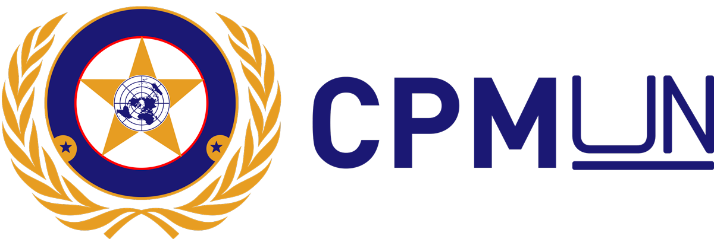

CPMUN - Modelo de Simulações Diplomáticas
O CPMUN, Modelo de Simulações Diplomáticas do Colégio da Polícia Militar do Paraná Cel. Felippe de Souza Miranda, surgiu como uma atividade extracurricular em 2023, graças à dedicação do professor Maicon Faccini, responsável por orientar e conduzir os alunos desde os primeiros passos. Graduado em História pela Universidade Estadual de Maringá e especialista em História Econômica pela mesma instituição, quando ainda era conhecido simplesmente como ONU Colegial. Foi durante essa primeira edição, que os alunos participantes, dentre os quais eu me encontrava, consolidaram o nome e identidade própria do projeto, criando a nomenclatura oficial CPMUN e desenhando seu logotipo. Esse momento marcou o surgimento de uma iniciativa que, em pouco tempo, se transformaria em uma verdadeira referência dentro do colégio.
Mais do que um evento, o CPMUN consolidou-se como uma comunidade acadêmica dinâmica e vibrante, na qual os participantes expandem e aprofundam seus conhecimentos em história, geografia, geopolítica, economia, sociologia, entre outras áreas essenciais à formação escolar. A simulação tornou-se uma experiência profundamente transformadora, promovendo o desenvolvimento e aprimoramento do pensamento crítico, da oratória, da diplomacia e do engajamento global.
Desde 2024, faço parte do secretariado, órgão-chave do projeto, responsável pela realização do primeiro CPMUN, evento que reuniu colégios de Curitiba para simular no CPM. E atualmente lidero esta incrível e crescente comunidade, visando aumentar cada vez mais o legado do projeto e pavimentar seu futuro.
Graças à dedicação daqueles que participam ativamente do CPMUN, obtivemos algumas conquistas, como a de Delegação Destaque na MundoCMC, modelo de simulações do Colégio Militar de Curitiba, além de participações marcantes no Simed (MUN do Colégio Medianeira) e SagradoMUN (MUN do Colégio Social Madre Clélia).
Instragram: @ocpmun